第十段階：結晶構造を取り扱う
単結晶Ｘ線構造解析は、分子構造の重要な情報源です。Molby は、結晶情報ファイル (CIF) を読み込み、構造データを取り扱うことができます。回折データから構造解析を行うことはできませんが、結晶構造を表示したり調べたりするのに便利な機能を持っています。
1. CIFデータの読み込み
"File" メニューから "Open..." コマンドを選び、ファイルタイプとして "Crystallographic Information File (CIF)" を選択します。
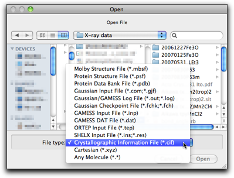
CIF を選んで "Open" を押します。CIF の中の分子は、対称操作で関連づけられた原子との間に結合を持っていることがあります。このような場合は、下のダイアログが表示されます。

分子が無限鎖でなく、自分自身の中に結晶学的な対称性を持っている場合は、２番目の選択肢（これが標準です）でうまくいきます。分子が無限鎖の場合は、１番目の選択肢の方が合理的です。また、対称操作で分子を拡大する機能は後でも使うことができますので、この段階では「外との結合」を無視する（３番目の選択肢）ことにしても構いません。
対称操作によって拡大すると、分子は下のようになります。暗い色で表示されているのは、対称操作によって作られた原子です。
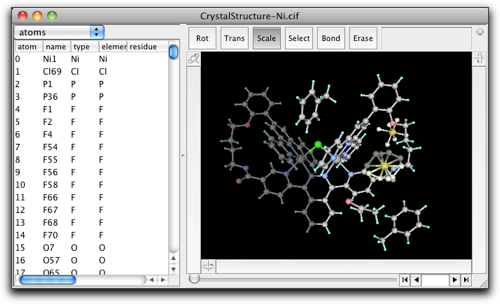
Molby の内部では、すべての原子座標は直交座標で扱われています。しかし、単位格子内の部分座標も計算することができます。属性テーブルで "xtal coords" を選ぶと、部分座標と占有数・温度因子を表示できます。
 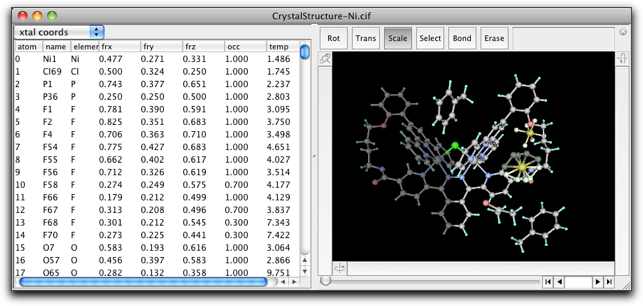
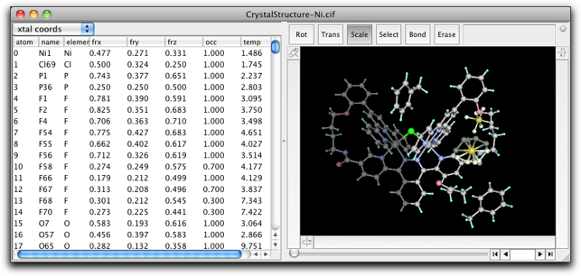
2. 結晶構造を調べる
結晶構造を調べるためのコマンドは "Xtal" メニューにあります。
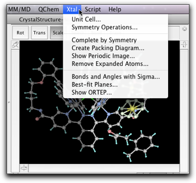
2-1. 単位格子
"Unit Cell" コマンドは、単位格子のパラメータを設定するのに使います。原点と単位格子の軸ベクトルを直接設定することもできます。
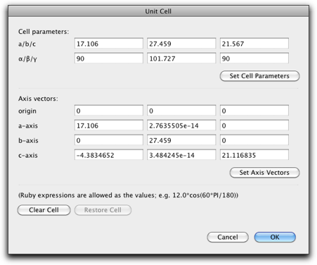
2-2. 対称操作
"Symmetry Operation" コマンドでは、対称操作を追加・削除したり、空間群を設定したりできます。

"Select..." ボタンを押すと、もう一つ別のダイアログが開きます。ここでは、あらかじめ定義された空間群を選択することができます。230 の空間群すべてがいろいろな原点・軸の設定で登録されています（すべての選択肢が網羅されている訳ではありませんが）。

2-3. 対称操作による拡大
"Complete by Symmetry" コマンドは、非対称単位内の分子の部分を対称操作によって拡大するために使います。これは、CIF を読み込む時のオプションと同様に機能しますが、結果は少し違うこともあります。（その理由は、"Complete by Symmetry" コマンドでは、異なる非対称単位中の原子間の結合の有無を、結合距離から推測するためです。CIF 読み込みの場合は、CIF に書かれた結合の情報を使います。）
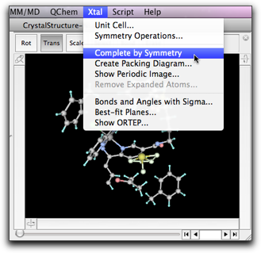
"Create Packing Diagram" コマンドは、指定した部分座標の範囲（標準は単位格子全体）に存在する原子を対称操作によって生成します。
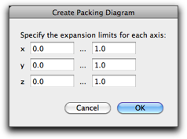
"Show Periodic Image" コマンドは、新しく原子を作るのではなく、単位格子の繰り返しイメージを画面上で表示するためのものです。
 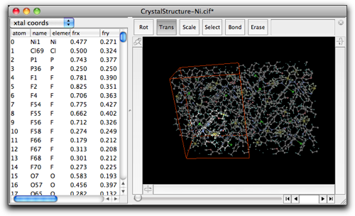
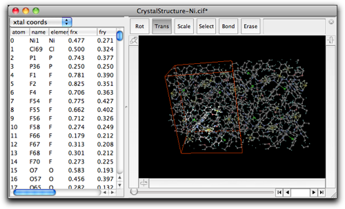
"Remove Expanded Atoms" コマンドは、対称操作によって生成された原子を削除します。２つのオプションがあります。１つは、すべての生成原子を削除するものです。もう１つは、拡張原子のみから成る部分分子を削除するものです（この場合、元の原子と同じ分子に属する拡張原子はそのまま残されます）。

結果は下のようになります。"Show Periodic Image" で表示している繰り返しイメージはまだ表示されていることに注意してください。これは拡張原子ではないため、削除はされません。（このイメージを消すには、"Show Periodic Image" コマンドで表示を無効にしてください。）
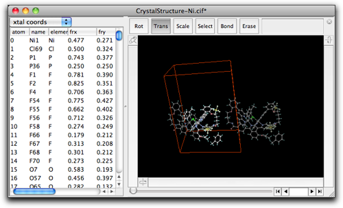
2-4. 結合・角度・最適平面
"Bonds and Angles with Sigma..." コマンドは、原子間の距離・角度を標準偏差付きで計算するものです。

"Add Bond" または "Add Angle" ボタンを押して新しいエントリーを作り、それからメインウィンドウで原子を１つずつクリックして指定します。例えば、"Bond" を１つ、"Angle" を１つ作ると、下のようになります。直接結合されていない原子を指定することもできます。

計算結果を他のソフトウェアで使うためには（例えばワードプロセッサにペーストする場合）、表の行を選択して "Export to Clipboard" ボタンを押してください。計算結果はプレーンテキストでコピーされ、他のアプリケーションにペーストできるようになります。
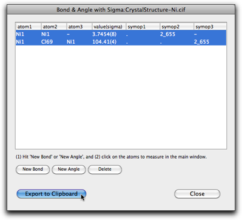
"Best-Fit Planes" コマンドは、最適平面を計算し、二面角や原子・平面間距離を計算するのに使います。ダイアログが開いたら、指定したい原子をメインウィンドウで選択して "Set Current Selection" ボタンを押してください。
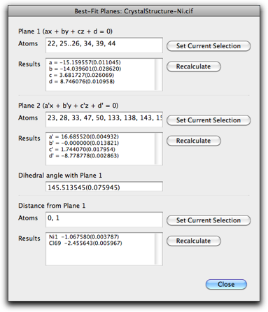
2-5. ORTEP 描画
"Show ORTEP" コマンドは、下のようなウィンドウを開きます。

ORTEP 描画は、ORTEP-III プログラムで作成しています。この結果を使う時には、下のように引用してください。
- Burnett, M. N.; Johnson, C. K. ORTEP-III: Oak Ridge Thermal Ellipsoid Plot Program for Crystal Structure Illustrations, Oak Ridge National Laboratory Report ORNL-6895, 1996.
このウィンドウで、原子や結合の表示方法を指定することができます。分子の向きは、メインウィンドウでの向きとだいたい同じです（完全に同じとは言えませんが）。描画結果は、ORTEP 入力ファイルで書き出すことができます。また、グラフィックファイル（EPS, PNG, TIFF）で書き出すこともできます。ビットマップ型 (PNG, TIFF) で書き出す時には、解像度は 360 dpi になります。